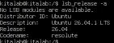
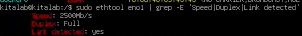
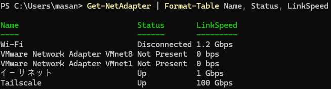
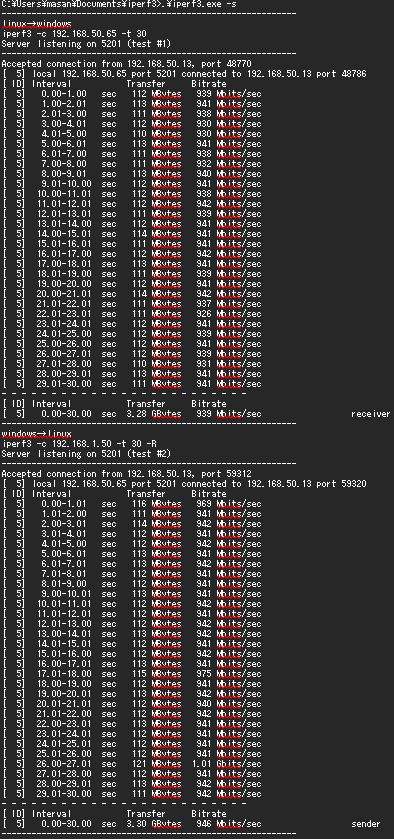

研究経過報告書
Ubuntu 26.04.1への更新とベンチマーク準備
研究テーマ
サーバー仮想化技術とコンテナ技術の性能比較および最適化に関する研究
進捗状況
Ubuntu Server 26.04から26.04.1へ更新し、OSとネットワークの状態を確認しました。
OSの更新
sudo apt update
sudo apt upgrade -y
sudo apt autoremove -y更新後にOSのバージョンを確認しました。
lsb_release -a
ネットワークの確認
Linuxではリンク速度と接続状態を確認し、Windows側でもアダプターのリンク速度を確認しました。
sudo ethtool eno1 | grep -E 'Speed|Duplex|Link'
Get-NetAdapter | Format-Table Name, Status, LinkSpeed
iperf3を使い、サーバー側とクライアント側からネットワーク性能を確認しました。
iperf3 -sサーバー側で実行
iperf3 -c 192.168.50.13 -t 30クライアント側で実行

測定スクリプトの整理
ベンチマークをSysBench、fio、iperf3の項目別スクリプトに分割しました。また、SysBenchとfioをそれぞれ10回実行する run_all.sh を作成しました。iperf3は別途10回実行する計画です。
参考として、20スレッド割り当てた状態でSysBench, fio, iperf3を10回実行し、SysBench, fioの平均値を算出しました。iperf3の結果は後日追加予定です。
ベンチマーク測定結果
20スレッドを割り当てた環境で測定した、CPUの処理性能とRAMの帯域幅・レイテンシの平均値です。
| 指標 | 平均値 |
|---|---|
| 演算速度（CPU speed） | 36,247.221 events/s |
| スループット | 36,247.221 events/s |
| 60秒間の平均処理イベント数 | 2,174,897.9 events |
| 種別 | 帯域幅（平均） | 帯域幅（GiB/s） | レイテンシ平均 |
|---|---|---|---|
| Read（読み込み） | 128,626.518 MiB/s | 約125.612 GiB/s | 約0.000025 ms |
| Write（書き込み） | 14,218.582 MiB/s | 約13.885 GiB/s | 約0.001212 ms |
CPUの値は10回の測定結果の平均値です。RAMのReadはメモリからの読み込み、Writeはメモリへの書き込みを表します。
fio測定結果（10回平均）
2026-10-08-09-36-58 に実行したfioの結果を、各JSONファイルのread/writeセクションから集計しました。
| 種別 | 平均 IOPS | 平均スループット | 平均レイテンシ |
|---|---|---|---|
fio_rand_read.json | 66,819.77 | 261.01 MiB/s | 59.41 us |
fio_rand_write.json | 923,656.37 | 3,608.03 MiB/s | 1.31 us |
fio_seq_read.json | 3,095.24 | 3,095.24 MiB/s | 320.33 us |
fio_seq_write.json | 2,482.64 | 2,482.64 MiB/s | 113.69 us |
スループットはJSONの bw（KiB/s）をMiB/sへ換算し、レイテンシは clat_ns.mean（ns）をusへ換算しています。
用語の説明
| 用語 | 説明 |
|---|---|
| events/s | 1秒あたりに処理できたイベント数です。値が大きいほど、単位時間あたりの処理性能が高いことを示します。 |
| スループット | 一定時間あたりに処理できる仕事量です。今回のCPU測定では、1秒あたりの処理イベント数として示しています。 |
| IOPS | 1秒あたりの入出力操作数（Input/Output Operations Per Second）です。値が大きいほど、細かい読み書きを多く処理できます。 |
| 帯域幅（Bandwidth） | 1秒間に読み書きできるデータ量です。MiB/sやGiB/sの値が大きいほど、データ転送性能が高くなります。 |
| MiB / GiB | データ量の単位です。1 GiBは1,024 MiBに相当します。fioではKiB/sを1,024で割ってMiB/sへ換算しています。 |
| レイテンシ（Latency） | 処理の要求を出してから、データの読み書きが完了するまでの遅延時間です。値が小さいほど応答が速いことを示します。 |
| us / ns | 時間の単位です。1 us（マイクロ秒）は1,000 ns（ナノ秒）に相当します。 |
今後の計画
- ホストOS上で条件を統一し、SysBenchとfioを各10回、iperf3を10回実行する
- 測定結果と実行環境を記録し、異常値やばらつきを確認する
- 結果を整理し、VM・Docker環境で実験する。
参考文献
今回の作業で新たに参照した文献はありません。